คู่มือใช้งานเครื่องมือ · ระดับ Free
ตรวจประเมินมอเตอร์และ VFD
Motor & VFD Energy Audit
FREE
สำหรับช่างเทคนิคที่เพิ่งเริ่มงาน — อ่านแล้วทำตามได้เอง
ใช้เวลาฝึกประมาณ 60 นาที
เคสตัวอย่าง: มอเตอร์ 75 kW 4 ขั้ว (ปุ่ม 📋 Sample 75kW ในเครื่องมือ)
อ.หนึ่ง กลับทวี / Aj. Nueng Klubtavee
tripleeenergytools.com
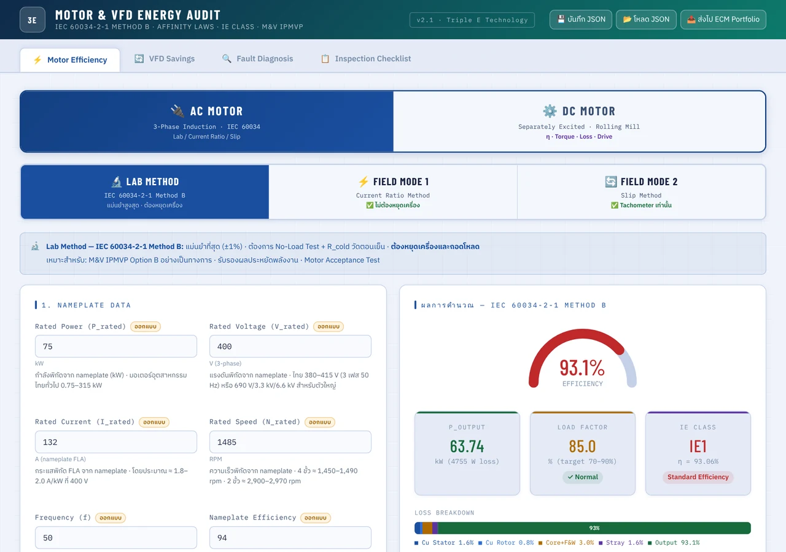
หน้าจอเครื่องมือ — เปิดได้จากเมนู Free ของเว็บไซต์
รุ่นเครื่องมือ: v2.3 · Free commit 409f662 · จับภาพ 23 พ.ย. 2569 · คู่มือ Rev05
เครื่องมือนี้ตอบคำถามอะไร
คู่มือใช้งาน · ตรวจประเมินมอเตอร์และ VFD (Motor & VFD Energy Audit) · ระดับ Free
2 / 33
| คำถามหน้างาน | ใช้ส่วนไหน | เคสตัวอย่างได้ |
|---|---|---|
| มอเตอร์ตัวนี้ประสิทธิภาพกี่ % และรับโหลดกี่ % ของพิกัด | แท็บ Motor Efficiency (3 วิธี) | η 93.06 % · โหลด 85.0 % |
| ประสิทธิภาพถึงเกณฑ์ IE ไหม | ตาราง IE Class | IE1 — ผ่าน IE1 (92.7 %) ไม่ถึง IE2 (94.0 %) |
| ติด VFD ลดรอบแล้วประหยัดเท่าไร คืนทุนกี่ปี | แท็บ VFD Savings | 195 MWh/ปี · คืนทุน 0.2 ปี |
| มอเตอร์ไหม้ พันขดลวดใหม่ หรือซื้อใหม่ | Rewinding vs Replace | ซื้อใหม่ IE3 คืนทุน 2.42 ปี |
| มอเตอร์ใหญ่เกินงานไหม | Motor Sizing | โหลด 26.8 % → ควรใช้ ~10.5 kW |
| มอเตอร์มีอาการผิดปกติไหม | แท็บ Fault Diagnosis | แรงดันไม่สมดุล 1.2 % |
| ตรวจครบทุกจุดหรือยัง | แท็บ Inspection Checklist | 33 รายการ + ออกรายงาน |
💡 เคล็ดลับ
ทำตามลำดับแท็บจากซ้ายไปขวา — แท็บหลังดึงค่าจากแท็บแรกให้อัตโนมัติ
แผนที่หน้าจอ: แท็บ Motor Efficiency
คู่มือใช้งาน · ตรวจประเมินมอเตอร์และ VFD (Motor & VFD Energy Audit) · ระดับ Free
3 / 33
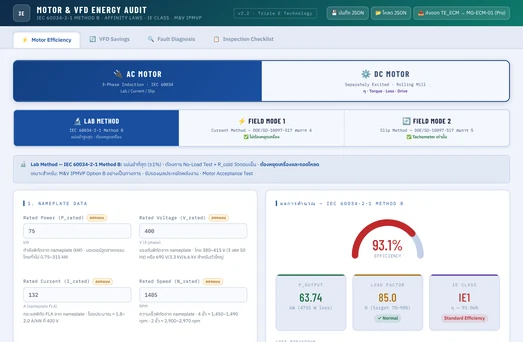
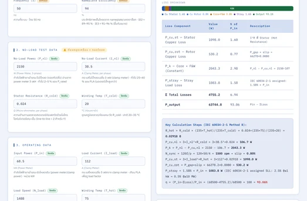
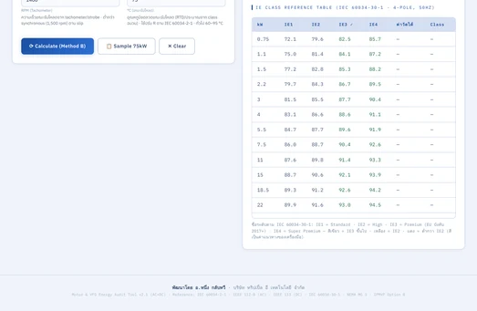
1
2
3
4
5
6
7
8
9
10
ส่วนต่าง ๆ ของหน้าจอ (เลื่อนจากบนลงล่าง)
1
บันทึก / โหลด JSON · ส่งออก TE_ECM → MG-ECM-01 (Pro)
2
แท็บ 4 แท็บ: ประสิทธิภาพ · VFD · วินิจฉัย · ตรวจเช็ก
3
ชนิดมอเตอร์: AC / DC
4
วิธีทดสอบ: Lab / Field 1 / Field 2
5
ข้อมูลป้ายมอเตอร์ (Nameplate)
6
ทดสอบไม่มีโหลด (เฉพาะ Lab)
7
ข้อมูลขณะรับโหลด
8
ปุ่มคำนวณ · ตัวอย่าง · ล้าง
9
ผลลัพธ์: เกจ η · KPI · ความสูญเสีย
10
ตารางเกณฑ์ IE Class
ภาพหน้าจอทั้งหน้า ตัดเป็น 3 ช่วง อ่านจากซ้ายไปขวา
💡 เคล็ดลับ
ซ้าย = กรอก · ขวา = ผล — กรอกจากบนลงล่างแล้วกดปุ่ม ⑧
เปิดบนมือถือ และสลับภาษา
คู่มือใช้งาน · ตรวจประเมินมอเตอร์และ VFD (Motor & VFD Energy Audit) · ระดับ Free
4 / 33
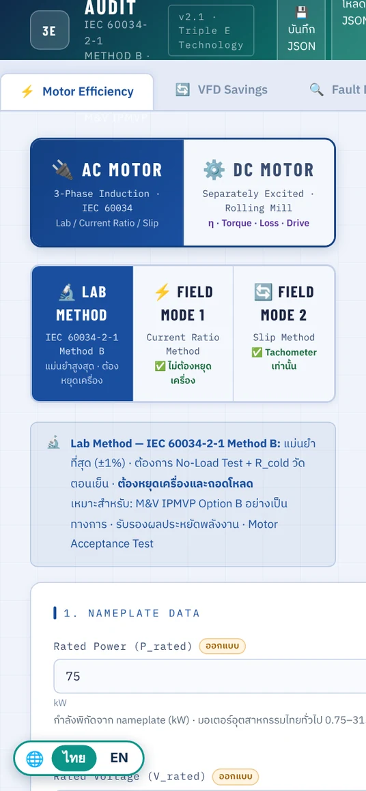
ใช้บนมือถือหน้างานได้ — หน้าจอเรียงเป็นคอลัมน์เดียว ผลลัพธ์อยู่ใต้ช่องกรอก
ปุ่ม 🌐 ไทย | EN ลอยอยู่ด้านล่าง กดสลับภาษาได้ ค่าที่กรอกไว้ไม่หาย
ป้ายสีข้างชื่อช่อง: ออกแบบ = อ่านจากป้าย/แคตตาล็อก · วัดจริง = ต้องวัดหน้างาน · ตั้งค่า = สมมติฐานที่เลือกเอง
ใต้ทุกช่องมีคำอธิบายสีเทา บอกเครื่องมือวัดและช่วงค่าปกติ
💡 เคล็ดลับ
จดค่าลงแบบฟอร์ม (สไลด์ 7) ก่อน แล้วค่อยกรอกบนคอมพิวเตอร์ จะผิดน้อยกว่า
ขั้นที่ 0
เลือกชนิดมอเตอร์ และวิธีทดสอบ
คู่มือใช้งาน · ตรวจประเมินมอเตอร์และ VFD (Motor & VFD Energy Audit) · ระดับ Free
5 / 33
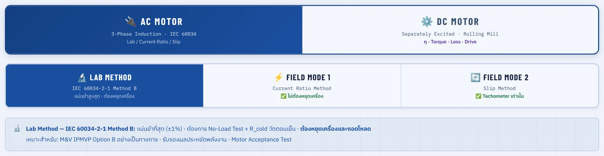
1
2
3
4
5
1
AC Motor — มอเตอร์เหนี่ยวนำ 3 เฟส (มอเตอร์ในโรงงานเกือบทั้งหมด)
2
DC Motor — มอเตอร์กระแสตรงขนาดใหญ่ เช่น โรงรีดเหล็ก (สไลด์ 27)
3
Lab Method — แม่นที่สุด แต่ต้องหยุดเครื่องและถอดโหลด
4
Field Mode 1 — วัดกระแส ไม่ต้องหยุดเครื่อง ← ใช้บ่อยที่สุด
5
Field Mode 2 — วัดรอบ ใช้ tachometer อย่างเดียว
แถบสีใต้ปุ่มบอกว่าวิธีที่เลือกต้องใช้อะไร และมีข้อจำกัดอะไร — อ่านทุกครั้งก่อนกรอก
เลือกวิธีไหนดี
คู่มือใช้งาน · ตรวจประเมินมอเตอร์และ VFD (Motor & VFD Energy Audit) · ระดับ Free
6 / 33
| วิธี | หยุดเครื่อง? | เครื่องมือวัดที่ต้องมี | ความแม่นยำ / ข้อจำกัด | เหมาะกับงาน |
|---|---|---|---|---|
| Lab (IEC 60034-2-1 Method B) | ต้องหยุด + ถอดคัปปลิ้ง | Power analyzer · clamp meter · micro-ohmmeter · เทอร์โมมิเตอร์ · tachometer | ละเอียดที่สุดในเครื่องมือนี้ | พิสูจน์ผลประหยัด (M&V) · รับมอบมอเตอร์ใหม่ |
| Field Mode 1 (กระแส) | ไม่ต้อง | Clamp meter + voltmeter (+ power meter) | โหลด ≥ ~50 % · FLA ป้าย ±10 % | สำรวจมอเตอร์หลายตัวเร็ว ๆ · หาตัวที่ควรทำมาตรการ |
| Field Mode 2 (Slip) | ไม่ต้อง | Tachometer แบบเลเซอร์/สโตรบ (+ power meter) | สลิปป้าย ±20 % · คัดกรอง | เปิดตู้ไฟฟ้าวัดกระแสไม่ได้ |
งานสำรวจทั่วไป: เริ่มที่ Field Mode 1 · ถ้าเปิดตู้ได้ไม่ครบ ใช้ Field Mode 2 เทียบ
ผลที่ใช้ยืนยันเงินประหยัดกับลูกค้า ต้องใช้ Lab หรือวัด kWh ก่อน-หลังด้วย power meter
Field Mode 1 = DOE/GO-10097-517 สมการ 4 · Field Mode 2 = สมการ 5 · ข้อจำกัดจากเอกสารเดียวกัน หน้า 4–7
⚠️ ระวัง
Lab ต้องหยุดเครื่อง ตัดไฟ และล็อกสวิตช์ (LOTO) — ทำภายใต้การควบคุมของช่างไฟฟ้าผู้รับผิดชอบเท่านั้น
เตรียมข้อมูลก่อนลงหน้างาน (แบบฟอร์มจดค่า)
คู่มือใช้งาน · ตรวจประเมินมอเตอร์และ VFD (Motor & VFD Energy Audit) · ระดับ Free
7 / 33
| ใช้ใน | ข้อมูลที่ต้องจด | เครื่องมือวัด / แหล่งข้อมูล | ค่าเคสตัวอย่าง |
|---|---|---|---|
| ทุกวิธี | ป้ายมอเตอร์: kW · V · A (FLA) · rpm · Hz · η | ถ่ายรูปป้ายมอเตอร์ / แคตตาล็อก | 75 kW · 400 V · 132 A · 1,485 rpm · 50 Hz · 94 % |
| Field 1 | กระแส 3 เฟส (A) | Clamp meter ทีละเฟส | 112 · 113 · 111 |
| Field 1, 2, Lab | กำลังไฟฟ้าเข้า P_in (kW) | Power meter 3 เฟส | 68.5 |
| Field 1, 2 | Power factor · แรงดัน | Power meter · โวลต์มิเตอร์ | 0.85 · 400 V |
| Field 2, Lab | ความเร็วรอบขณะรับโหลด (rpm) | Tachometer เลเซอร์/สโตรบ | 1,488 |
| Lab | กำลังและกระแสตอนไม่มีโหลด | Power meter (ถอดคัปปลิ้งแล้วเดินตัวเปล่า) | 2,150 W · 38.5 A |
| Lab | ความต้านทานขดลวดตอนเย็น + อุณหภูมิ | Micro-ohmmeter · เทอร์โมมิเตอร์ | 0.024 Ω · 20 °C |
| Lab | อุณหภูมิขดลวดขณะรับโหลด | RTD ในมอเตอร์ / ประมาณจากคลาสฉนวน | 75 °C |
⚠️ ระวัง
วัดค่าไฟฟ้าและรอบพร้อมกันในช่วงโหลดคงที่ — ถ้าวัดคนละช่วง ผลจะเพี้ยน
ขั้นที่ 1
Lab: กรอกข้อมูลป้ายมอเตอร์
คู่มือใช้งาน · ตรวจประเมินมอเตอร์และ VFD (Motor & VFD Energy Audit) · ระดับ Free
8 / 33
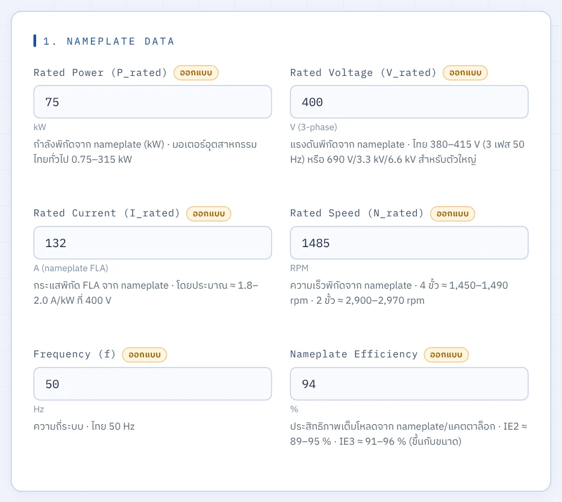
1
2
3
4
5
6
1
กำลังพิกัด = 75 kW (ป้ายเป็น HP → × 0.746)
2
แรงดันพิกัด = 400 V
3
กระแสพิกัด (FLA) = 132 A
4
รอบพิกัด = 1,485 rpm (4 ขั้ว ≈ 1,450–1,490)
5
ความถี่ = 50 Hz
6
ประสิทธิภาพตามป้าย = 94 %
💡 เคล็ดลับ
กดปุ่ม 📋 Sample 75kW ใต้ฟอร์มเพื่อเติมค่าตัวอย่างทั้งหมด แล้วฝึกตามคู่มือได้ทันที
ขั้นที่ 2
Lab: ผลทดสอบไม่มีโหลด (No-Load Test)
คู่มือใช้งาน · ตรวจประเมินมอเตอร์และ VFD (Motor & VFD Energy Audit) · ระดับ Free
9 / 33
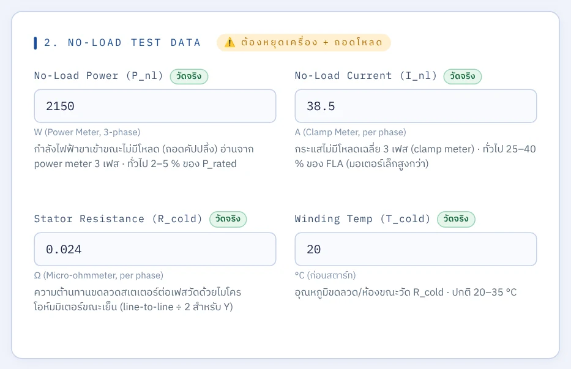
1
2
3
4
1
กำลังไฟฟ้าตอนไม่มีโหลด = 2,150 W (ปกติ 2–5 % ของพิกัด)
2
กระแสตอนไม่มีโหลด = 38.5 A (ปกติ 25–40 % ของ FLA)
3
ความต้านทานขดลวด = 0.024 Ω ต่อเฟส — วัดตอนมอเตอร์เย็น
4
อุณหภูมิขดลวดตอนวัดความต้านทาน = 20 °C
ต่อแบบ Y วัดสายต่อสาย → หาร 2 ได้ค่าต่อเฟส
ค่า 2 ช่องบนใช้หาความสูญเสียแกนเหล็ก + แรงเสียดทาน (คงที่ทุกโหลด)
⚠️ ระวัง
ต้องหยุดเครื่อง ถอดคัปปลิ้ง แล้วเดินมอเตอร์ตัวเปล่า — ทำตามขั้นตอน LOTO ทุกครั้ง
ขั้นที่ 3
Lab: ข้อมูลขณะรับโหลด แล้วกดคำนวณ
คู่มือใช้งาน · ตรวจประเมินมอเตอร์และ VFD (Motor & VFD Energy Audit) · ระดับ Free
10 / 33
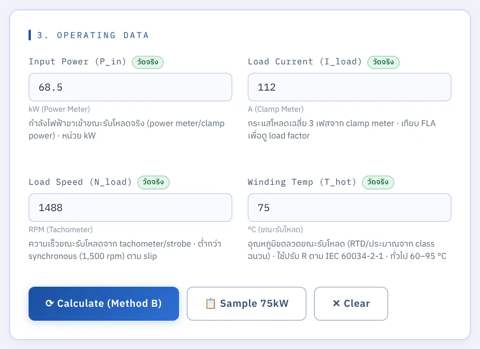
1
2
3
4
5
6
7
1
กำลังไฟฟ้าเข้า = 68.5 kW จาก power meter — ค่าสำคัญที่สุด
2
กระแสขณะรับโหลด = 112 A
3
รอบขณะรับโหลด = 1,488 rpm
4
อุณหภูมิขดลวดขณะรับโหลด = 75 °C
5
Calculate (Method B) — กดทุกครั้งที่แก้ค่า
6
Sample 75kW — เติมค่าตัวอย่าง
7
Clear — ล้างทุกช่อง (ระวังกดพลาด)
⚠️ ระวัง
ช่อง ① หน่วย kW ไม่ใช่ W — กรอก 68.5 ไม่ใช่ 68500
อ่านผล Lab: ประสิทธิภาพและโหลด
คู่มือใช้งาน · ตรวจประเมินมอเตอร์และ VFD (Motor & VFD Energy Audit) · ระดับ Free
11 / 33
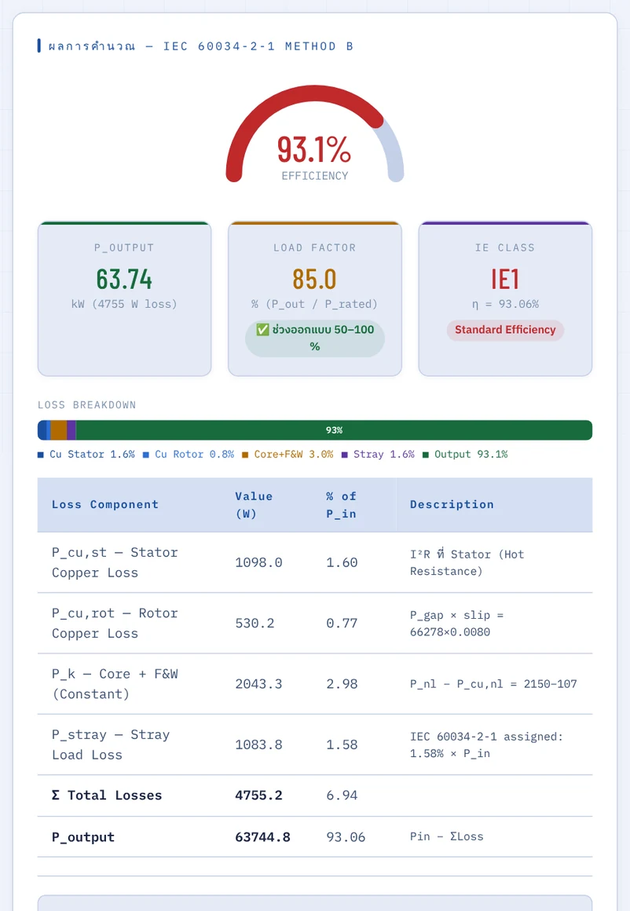
1
2
3
4
5
1
ประสิทธิภาพ = 93.06 %
2
กำลังที่เพลา = 63.74 kW (สูญเสีย 4755 W)
3
โหลด = 85.0 % ของพิกัด (ช่วงออกแบบ 50–100 %)
4
IE Class = IE1 — ผ่าน IE1 (92.7 %) แต่ต่ำกว่า IE2 (94.0 %)
5
แถบสี: สัดส่วนความสูญเสียแต่ละชนิด
ป้าย Class เป็นสีแดง = ต่ำกว่า IE2 → เป็นตัวเลือกเปลี่ยนมอเตอร์ประสิทธิภาพสูง (IE3)
โหลดต่ำกว่า 50 % = ประสิทธิภาพลดลงเร็ว ควรทบทวนขนาดมอเตอร์ (DOE/GO-10097-517 หน้า 1 · ดูสไลด์ 23)
ตารางความสูญเสีย และขั้นตอนคำนวณ
คู่มือใช้งาน · ตรวจประเมินมอเตอร์และ VFD (Motor & VFD Energy Audit) · ระดับ Free
12 / 33
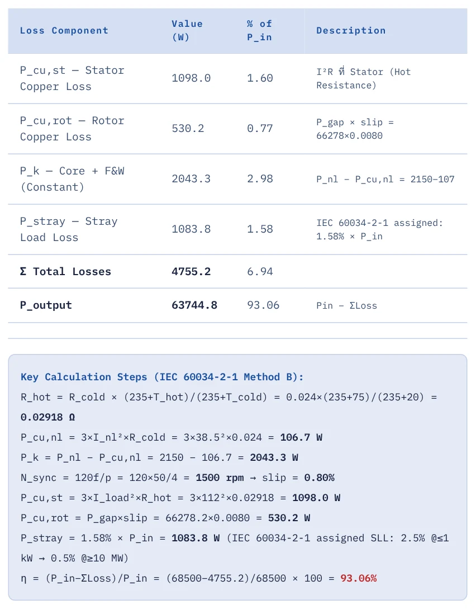
1
2
3
4
5
1
สูญเสียทองแดงสเตเตอร์ = 1098.0 W (I²R ที่ขดลวดร้อน)
2
สูญเสียทองแดงโรเตอร์ (= กำลังช่องอากาศ × slip)
3
แกนเหล็ก + แรงเสียดทาน = 2043.3 W (คงที่)
4
สูญเสียกระจาย (Stray) ตามที่ IEC กำหนด
5
ขั้นตอนคำนวณทีละสมการ
ความต้านทานขดลวดร้อน = 0.02918 Ω (ปรับจาก 20 → 75 °C)
Slip = 0.80 % จากรอบ 1,500 → 1,488 rpm
ใช้กล่องสมการนี้ตรวจว่ากรอกค่าถูก และอธิบายผลให้หัวหน้าฟัง
ขั้นที่ 1–2
Field Mode 1: กรอกป้ายมอเตอร์และค่าที่วัด
คู่มือใช้งาน · ตรวจประเมินมอเตอร์และ VFD (Motor & VFD Energy Audit) · ระดับ Free
13 / 33
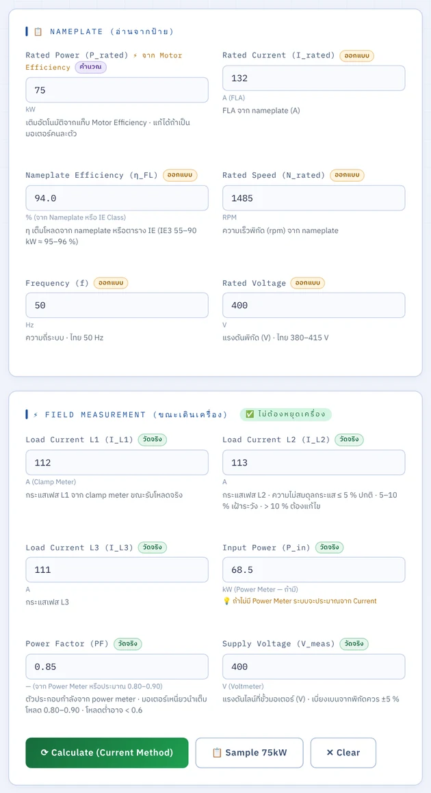
1
2
3
4
5
6
7
8
1
กำลังพิกัด (ดึงจากแท็บ Lab ให้อัตโนมัติ — แก้ได้)
2
กระแสพิกัด FLA = 132 A
3
ประสิทธิภาพตามป้าย = 94 %
4
กระแสเฟส L1–L3 = 112 · 113 · 111 A
5
กำลังไฟฟ้าเข้า = 68.5 kW (ไม่มี power meter ปล่อยว่างได้)
6
Power factor = 0.85
7
แรงดันที่วัดได้ = 400 V — ใช้ชดเชยโหลด (× V วัด ÷ V พิกัด)
8
Calculate (Current Method)
💡 เคล็ดลับ
ไม่มี power meter → เครื่องมือคำนวณ P_in จาก √3 × V × I × PF ให้ — แม่นน้อยลง
Field Mode 1: อ่านผล
คู่มือใช้งาน · ตรวจประเมินมอเตอร์และ VFD (Motor & VFD Energy Audit) · ระดับ Free
14 / 33
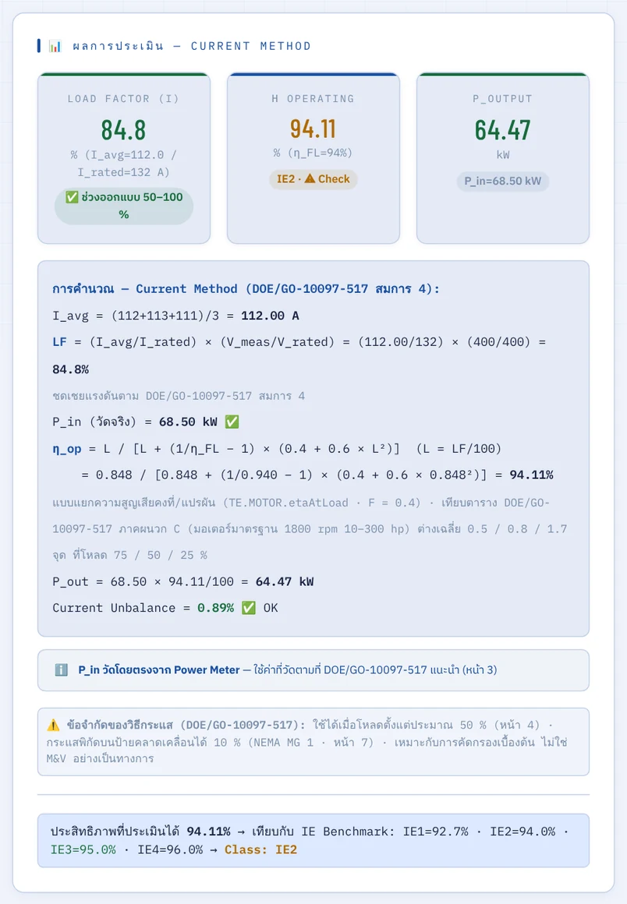
1
2
3
4
5
1
โหลด = 84.8 % = (กระแสเฉลี่ย ÷ FLA) × (V วัด ÷ V พิกัด)
2
ประสิทธิภาพขณะทำงาน = 94.11 %
3
กำลังที่เพลา = 64.47 kW
4
ขั้นตอนคำนวณ: กระแสเฉลี่ย 112.00 A · ไม่สมดุล 0.89 %
5
เทียบเกณฑ์ IE: IE2 = 94.0 % · IE3 = 95.0 % → Class IE2
สูตร: η = L ÷ [L + (1/η ป้าย − 1) × (0.4 + 0.6 L²)] (L = โหลด ÷ 100) — แบบแยกความสูญเสียคงที่/แปรผัน เดียวกับทะเบียนมอเตอร์ · ประมาณจากป้าย ไม่ได้วัดความสูญเสียจริง
กระแสไม่สมดุล: ≤ 5 % ปกติ · 5–10 % เฝ้าระวัง · เกิน 10 % ต้องแก้ไข — ตรวจแรงดันและจุดต่อสาย
⚠️ ระวัง
ข้อจำกัด (DOE/GO-10097-517): วิธีกระแสใช้ได้เมื่อโหลดตั้งแต่ ~50 % · ต่ำกว่านั้นเครื่องมือขึ้นคำเตือนให้วัดกำลังไฟฟ้า · ป้าย FLA คลาดได้ 10 % — ใช้คัดกรอง ไม่ใช่ตัวเลขยืนยันผลประหยัด
Field Mode 2: วัดรอบอย่างเดียว (Slip Method)
คู่มือใช้งาน · ตรวจประเมินมอเตอร์และ VFD (Motor & VFD Energy Audit) · ระดับ Free
15 / 33
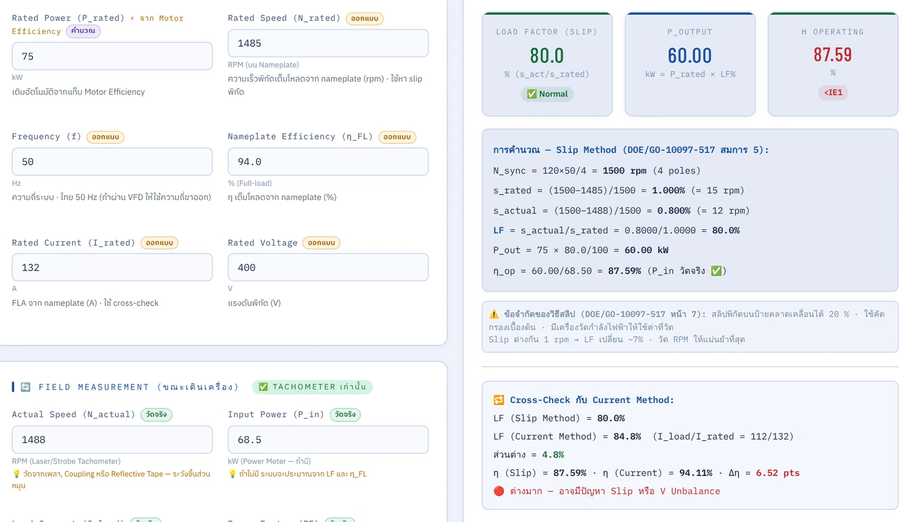
1
2
3
4
1
รอบพิกัดจากป้าย = 1,485 rpm
2
รอบจริง = 1,488 rpm — วัดให้ละเอียดถึง 1 rpm
3
ผล: โหลด 80.0 % · P_out 60.00 kW · η 87.59 %
4
เทียบกับวิธีกระแส: โหลดต่าง 4.8 % · ประสิทธิภาพต่าง 6.52 จุด
Slip พิกัด = 1.000 % · Slip จริง = 0.800 % → โหลด = slip จริง ÷ slip พิกัด
รอบคลาด 1 rpm → โหลดเปลี่ยนประมาณ 7 % — ใช้ tachometer เลเซอร์/สโตรบ ห้ามใช้ค่าป้าย
ป้ายสลิปคลาดได้ 20 % และ DOE โดยทั่วไปไม่แนะนำวิธีนี้ — ใช้คัดกรองเบื้องต้น
💡 เคล็ดลับ
กล่อง Cross-Check เทียบทั้งโหลดและประสิทธิภาพ — ประสิทธิภาพต่างเกิน 3 จุดให้วัดรอบใหม่ หรือใช้วิธีกระแส
เทียบผล 3 วิธี กับมอเตอร์ตัวเดียวกัน
คู่มือใช้งาน · ตรวจประเมินมอเตอร์และ VFD (Motor & VFD Energy Audit) · ระดับ Free
16 / 33
| วิธี | โหลด (%) | กำลังที่เพลา (kW) | ประสิทธิภาพ (%) |
|---|---|---|---|
| Lab (วัดความสูญเสียจริง) | 85.0 | 63.74 | 93.06 |
| Field Mode 1 (กระแส) | 84.8 | 64.47 | 94.11 |
| Field Mode 2 (รอบ) | 80.0 | 60.00 | 87.59 |
Field 1 ประมาณ η จากป้ายด้วยแบบจำลอง จึงต่างจาก Lab ได้เล็กน้อย — Field 1 พอสำหรับงานสำรวจ ไม่ใช่ตัวเลขยืนยัน
Field 2 ได้ประสิทธิภาพต่ำกว่าชัดเจน เพราะโหลดจาก slip ไวต่อรอบมาก
รายงานต้องระบุวิธีทุกครั้ง เช่น "η 94.11 % (Field Mode 1, Current Method)"
อ่านตารางเกณฑ์ IE Class
คู่มือใช้งาน · ตรวจประเมินมอเตอร์และ VFD (Motor & VFD Energy Audit) · ระดับ Free
17 / 33
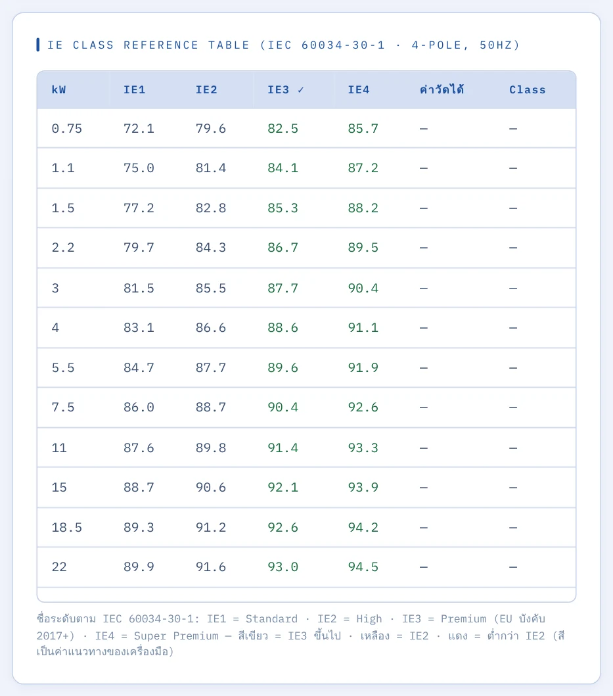
เกณฑ์ประสิทธิภาพขั้นต่ำตาม IEC 60034-30-1 (มอเตอร์ 4 ขั้ว 50 Hz) — เลื่อนในกรอบเพื่อดูแถวขนาดใหญ่
มอเตอร์ 75 kW: IE1 92.7 · IE2 94.0 · IE3 95.0 · IE4 96.0 % · เกิน 200 kW ใช้เกณฑ์เดียวกับ 200 kW
ต่ำกว่าเกณฑ์ IE1 → แสดง <IE1 · มอเตอร์เคสนี้ 93.06 % อยู่ระหว่าง IE1 กับ IE2 → IE1
เกณฑ์ IE กำหนดที่โหลดเต็ม — มอเตอร์ที่เดินโหลดต่ำจะได้ค่าต่ำกว่าป้ายเล็กน้อย ให้ดูประกอบกับโหลด
💡 เคล็ดลับ
ชื่อระดับตาม IEC 60034-30-1: IE1 Standard · IE2 High · IE3 Premium · IE4 Super Premium · สีบนจอ: เขียว = IE3 ขึ้นไป · เหลือง = IE2 · แดง = ต่ำกว่า IE2 (สีเป็นค่าแนวทางของเครื่องมือ)
ขั้นที่ 4
แท็บ VFD Savings: กรอกข้อมูลระบบ
คู่มือใช้งาน · ตรวจประเมินมอเตอร์และ VFD (Motor & VFD Energy Audit) · ระดับ Free
18 / 33
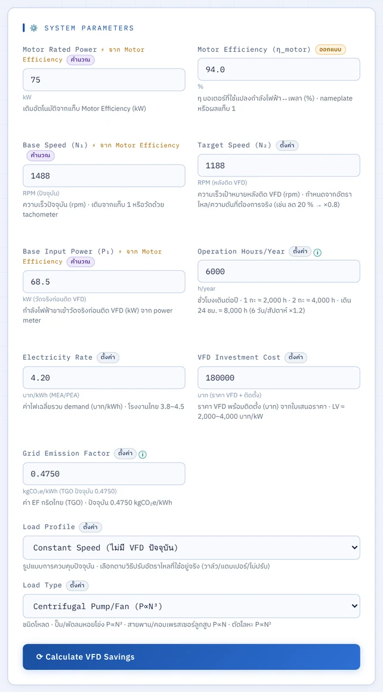
1
2
3
4
5
6
7
8
1
กำลังพิกัด 75 kW (⚡ ดึงจากแท็บแรก)
2
รอบเดิม = 1488 rpm (⚡ รอบที่วัดได้ในแท็บแรก)
3
รอบเป้าหมาย หลังติด VFD = 1,188 rpm (80 %)
4
กำลังไฟฟ้าเดิม = 68.5 kW (⚡ ดึงจากแท็บแรก)
5
ชั่วโมงทำงาน/ปี = 6,000
6
ค่าไฟ = 4.20 บาท/kWh
7
ค่าติดตั้ง VFD = 180,000 บาท
8
ชนิดโหลด: ปั๊ม/พัดลมแรงเหวี่ยง (กำลัง ∝ รอบ³)
รอบเป้าหมายหาจาก: วาล์ว/แดมเปอร์ที่หรี่อยู่ · ความดัน/อัตราไหลที่ต้องการจริง
💡 เคล็ดลับ
ช่องป้าย "⚡ จาก Motor Efficiency" เติมให้อัตโนมัติ — คำนวณแท็บแรกก่อน แล้วค่อยมาแท็บนี้
อ่านผล VFD
คู่มือใช้งาน · ตรวจประเมินมอเตอร์และ VFD (Motor & VFD Energy Audit) · ระดับ Free
19 / 33
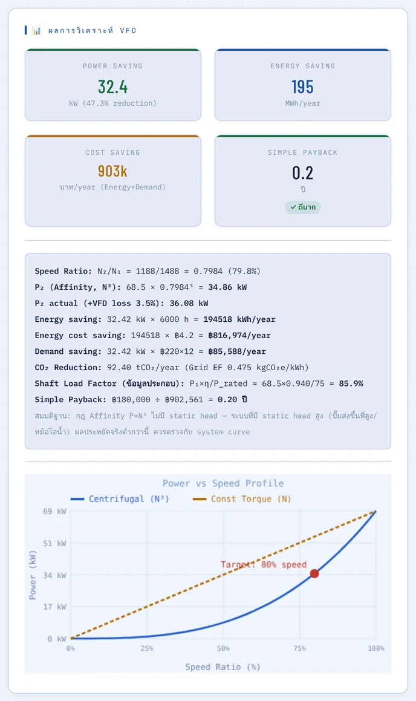
1
2
3
4
5
6
1
กำลังที่ลดได้ = 32.4 kW (47.3 %)
2
พลังงานที่ลดได้ = 195 MWh/ปี
3
เงินที่ลดได้ = 903k บาท/ปี (ค่าไฟ + ค่าดีมานด์)
4
คืนทุน = 0.2 ปี
5
ขั้นตอนคำนวณ
6
กราฟกำลังไฟฟ้า–รอบ และจุดเป้าหมาย
กำลังหลังลดรอบ = 68.5 × 0.7984³ + สูญเสียใน VFD 3.5 % = 36.08 kW
ค่าไฟ 816,974 บาท + ค่าดีมานด์ 85,588 บาท/ปี · ลด CO₂ 92.40 ตัน/ปี
⚠️ ระวัง
กฎกำลังสามใช้กับระบบที่ไม่มีแรงดันสถิต (static head) — ปั๊มส่งน้ำขึ้นที่สูงประหยัดจริงน้อยกว่านี้
ตาราง Affinity Laws: ลดรอบเท่าไร ไฟลดเท่าไร
คู่มือใช้งาน · ตรวจประเมินมอเตอร์และ VFD (Motor & VFD Energy Audit) · ระดับ Free
20 / 33
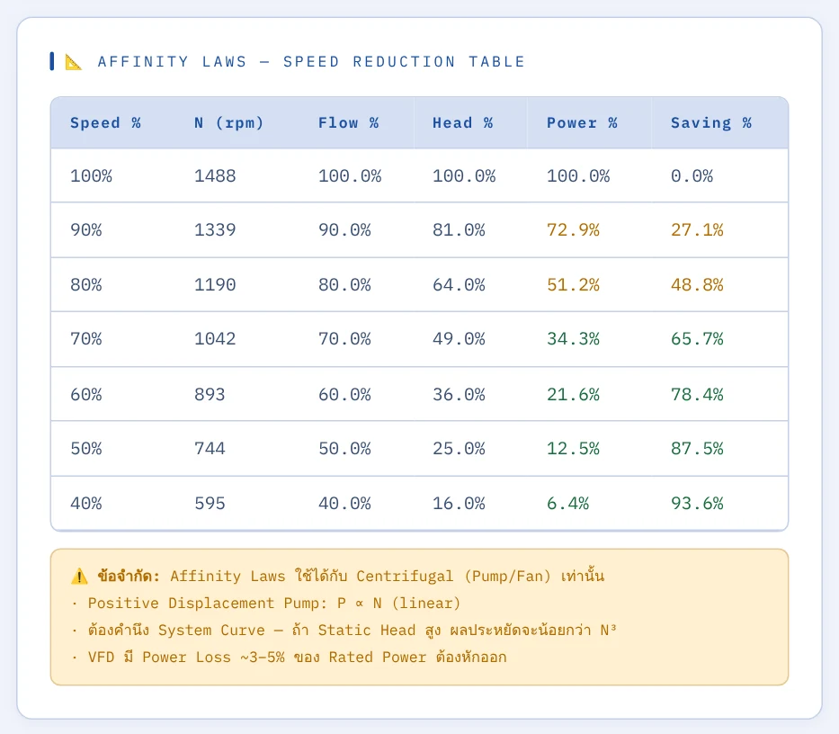
ลดรอบ 20 % (เหลือ 80 %) → อัตราไหลเหลือ 80 % · กำลังไฟเหลือ 51.2 %
ลดรอบนิดเดียวก็ลดไฟได้มาก — นี่คือเหตุผลที่ VFD คุ้มกับปั๊ม/พัดลมที่หรี่วาล์ว
ปั๊มลูกสูบ/สกรู (Positive Displacement): กำลัง ∝ รอบ (ลดแบบเส้นตรง)
ด้านล่างของแท็บมีช่องค่าดีมานด์ (บาท/kW-เดือน) และ PF — ใช้คิดเงินค่าดีมานด์ที่ลดได้
⚠️ ระวัง
ระบบที่ต้องรักษาความดันขั้นต่ำ (ปั๊มส่งขึ้นตึก, หม้อไอน้ำ) ลดรอบได้จำกัด — ตรวจกับเส้นโค้งระบบก่อน
ลองเปลี่ยนค่า (What-if) ในแท็บ VFD
คู่มือใช้งาน · ตรวจประเมินมอเตอร์และ VFD (Motor & VFD Energy Audit) · ระดับ Free
21 / 33
| ลองเปลี่ยน | kW ที่ลด | MWh/ปี | บาท/ปี | คืนทุน (ปี) |
|---|---|---|---|---|
| เคสหลัก: ลดรอบเหลือ 80 % · 6,000 ชม. | 32.4 | 195 | 903k | 0.2 |
| ลดรอบน้อยลง เหลือ 90 % (1,339 rpm) | 16.8 | 101 | 469k | 0.4 |
| ลดรอบมากขึ้น เหลือ 70 % (1,042 rpm) | 44.2 | 265 | 1229k | 0.1 |
| โหลดเป็นปั๊มลูกสูบ (กำลัง ∝ รอบ) | 11.9 | 71 | 331k | 0.5 |
| เดินเครื่องแค่ 4,000 ชม./ปี | 32.4 | 130 | 630k | 0.3 |
ทำเอง: แก้ค่า → กด Calculate VFD Savings → จดผล → แก้กลับเป็นค่าเดิม
ชนิดโหลดมีผลมากที่สุด — เลือกผิดจากปั๊มลูกสูบเป็นแรงเหวี่ยง ผลประหยัดเกินจริงหลายเท่า
มอเตอร์ไหม้: พันขดลวดใหม่ หรือซื้อมอเตอร์ IE3
คู่มือใช้งาน · ตรวจประเมินมอเตอร์และ VFD (Motor & VFD Energy Audit) · ระดับ Free
22 / 33
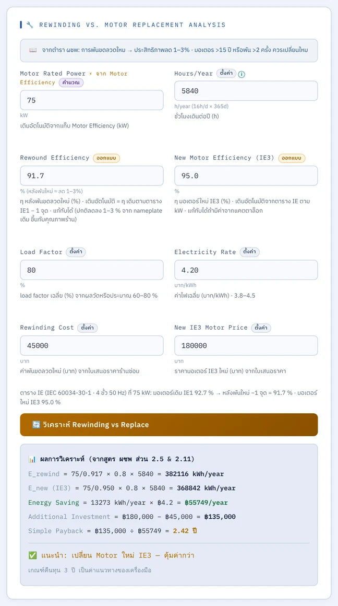
1
2
3
4
5
6
7
1
กำลังพิกัด (⚡ ดึงจากแท็บแรก = 75 kW)
2
ประสิทธิภาพหลังพันใหม่ = 91.7 % (เครื่องมือเติมให้ = IE1 ลบ 1 จุด แก้ทับได้)
3
ประสิทธิภาพมอเตอร์ใหม่ IE3 = 95.0 % (เติมจากตาราง IE)
4
โหลดเฉลี่ย = 80 %
5
ค่าพันขดลวด = 45,000 บาท (ราคาสมมุติของโรงงาน A)
6
ราคามอเตอร์ใหม่ = 180,000 บาท (ราคาสมมุติของโรงงาน A)
7
ผลวิเคราะห์ + คำแนะนำ
พลังงาน: พันใหม่ 382116 · ซื้อใหม่ 368842 kWh/ปี → ต่างกัน 13273 kWh/ปี = 55749 บาท/ปี
จ่ายเพิ่ม 135,000 บาท คืนทุน 2.42 ปี → ต่ำกว่า 3 ปี เครื่องมือแนะนำซื้อใหม่ (เกณฑ์ 3 ปีเป็นค่าแนวทางของเครื่องมือ)
💡 เคล็ดลับ
เมื่อขนาดมอเตอร์เปลี่ยน เครื่องมือจะล้างช่อง 5–6 — ต้องกรอกราคาจากใบเสนอราคาของมอเตอร์ขนาดนั้นเอง ถ้าเว้นว่างจะได้เฉพาะผลพลังงาน ไม่มีระยะคืนทุน
มอเตอร์ใหญ่เกินงาน (Motor Sizing)
คู่มือใช้งาน · ตรวจประเมินมอเตอร์และ VFD (Motor & VFD Energy Audit) · ระดับ Free
23 / 33
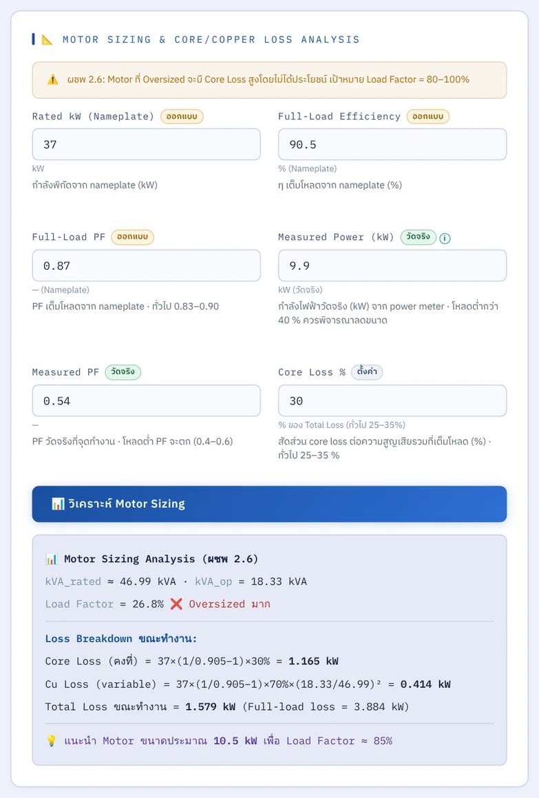
1
2
3
4
5
1
กำลังพิกัดตามป้าย = 37 kW
2
กำลังที่วัดได้ = 9.9 kW
3
PF ที่วัดได้ = 0.54 (ต่ำ เพราะโหลดน้อย)
4
สัดส่วนสูญเสียแกนเหล็ก = 30 %
5
ผลวิเคราะห์
โหลด = 26.8 % → ใหญ่เกินงานมาก
สูญเสียขณะทำงาน 1.579 kW (เต็มพิกัด 3.884 kW) — แกนเหล็กสูญเสียคงที่ แม้โหลดน้อย
แนะนำมอเตอร์ประมาณ 10.5 kW ให้โหลด ~85 %
💡 เคล็ดลับ
ส่วนนี้เป็นมอเตอร์อีกตัว (37 kW) — ช่องไม่ดึงค่าจากแท็บแรก กรอกเองทุกช่อง
ขั้นที่ 5
แท็บ Fault Diagnosis: กรอกค่าตรวจวัด
คู่มือใช้งาน · ตรวจประเมินมอเตอร์และ VFD (Motor & VFD Energy Audit) · ระดับ Free
24 / 33
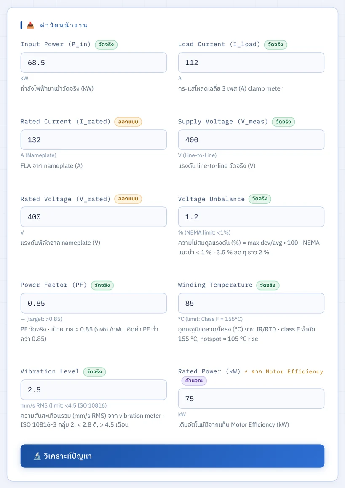
1
2
3
4
5
1
แรงดันไม่สมดุล = 1.2 % (เกณฑ์ NEMA < 1 %)
2
Power factor = 0.85
3
อุณหภูมิขดลวด = 85 °C
4
ความสั่นสะเทือน = 2.5 mm/s RMS
5
วิเคราะห์ปัญหา
แรงดันไม่สมดุล % = ค่าที่ห่างจากเฉลี่ยมากที่สุด ÷ ค่าเฉลี่ย × 100
ช่องกำลัง/กระแส/แรงดันเติมค่าตัวอย่างไว้แล้ว — แก้เป็นค่าที่วัดจริง
อ่านผลวินิจฉัย
คู่มือใช้งาน · ตรวจประเมินมอเตอร์และ VFD (Motor & VFD Energy Audit) · ระดับ Free
25 / 33
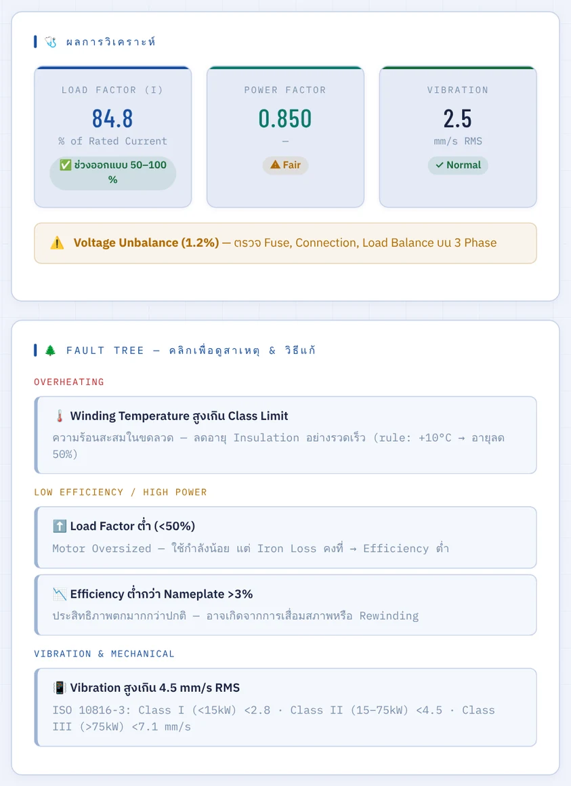
1
2
3
1
สถานะโหลด · PF · ความสั่น (เขียว = ปกติ, ส้ม = เฝ้าดู)
2
คำเตือน: แรงดันไม่สมดุล 1.2 % → ตรวจฟิวส์ จุดต่อ และโหลดแต่ละเฟส
3
ผังสาเหตุ–วิธีแก้: ร้อนเกิน · ประสิทธิภาพต่ำ · สั่นสะเทือน
แรงดันไม่สมดุล 1 % ทำให้ขดลวดร้อนขึ้นประมาณ 10–15 % — ตารางด้านล่างแท็บบอกระดับที่ต้องลดพิกัด
ตารางคลาสฉนวน (B/F/H) ใช้เทียบอุณหภูมิขดลวดที่วัดได้
ขั้นที่ 6
แท็บ Inspection Checklist: ตรวจเช็กและออกรายงาน
คู่มือใช้งาน · ตรวจประเมินมอเตอร์และ VFD (Motor & VFD Energy Audit) · ระดับ Free
26 / 33
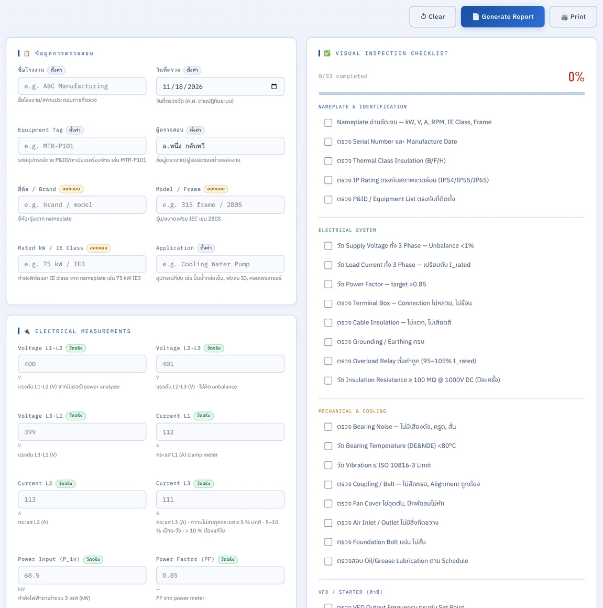
1
2
3
4
5
6
1
ข้อมูลงาน: ชื่อโรงงาน · วันที่ · รหัสอุปกรณ์ · ผู้ตรวจ
2
ค่าวัดไฟฟ้า: แรงดัน · กระแส 3 เฟส · kW · PF
3
แถบความคืบหน้า — ติ๊กครบ = 100 %
4
รายการตรวจ 33 ข้อ แยก 5 หมวด
5
Generate Report — สร้างรายงานสรุป
6
Print — พิมพ์ / บันทึก PDF
หมวด: ป้าย/เอกสาร · ระบบไฟฟ้า · เครื่องกลและการระบายความร้อน · VFD/สตาร์ทเตอร์ · ความปลอดภัย
ใช้เป็นแบบฟอร์มเดินตรวจได้เลย — ติ๊กบนมือถือขณะอยู่หน้ามอเตอร์
มอเตอร์กระแสตรง (DC Motor)
คู่มือใช้งาน · ตรวจประเมินมอเตอร์และ VFD (Motor & VFD Energy Audit) · ระดับ Free
27 / 33
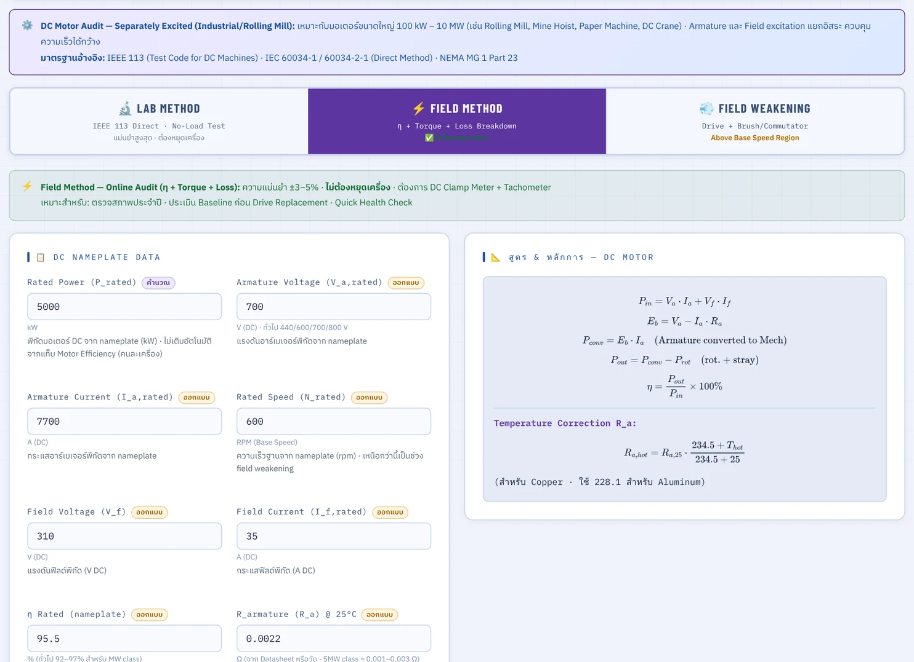
1
2
3
1
Lab Method — ทดสอบตามมาตรฐาน IEEE 113
2
Field Method — วัดแรงดัน/กระแสอาร์เมเจอร์และสนามขณะเดินเครื่อง
3
Field Weakening — ช่วงรอบเกินพิกัด
ใช้กับมอเตอร์ DC ขนาดใหญ่ เช่น แท่นรีดเหล็ก · มีปุ่ม Load Sample 5MW ให้ฝึก
มีส่วนแรงบิด/กำลัง แยกความสูญเสีย และเทียบเปลี่ยนเป็น AC + VFD
⚠️ ระวัง
แรงดันอาร์เมเจอร์หลายร้อยโวลต์ กระแสหลายพันแอมป์ — วัดโดยช่างไฟฟ้าที่ได้รับมอบหมายเท่านั้น
บันทึกงาน และส่งไปประเมินมาตรการ
คู่มือใช้งาน · ตรวจประเมินมอเตอร์และ VFD (Motor & VFD Energy Audit) · ระดับ Free
28 / 33
1
2
3
1
บันทึก JSON — เก็บค่าทุกแท็บไว้ในเครื่อง
2
โหลด JSON — เปิดงานเดิมกลับมาทำต่อ
3
📤 ส่งออก TE_ECM → MG-ECM-01 (Pro) — ได้ไฟล์มาตรการที่คำนวณแล้วไปรวมคิดเงินใน MG-ECM-01
ส่งเฉพาะส่วนที่กดคำนวณแล้ว: VFD (แท็บ VFD) และ/หรือ เปลี่ยนมอเตอร์ใหม่ (Rewinding vs Replace)
ยังไม่ได้กดคำนวณส่วนไหนเลย → เครื่องมือแจ้งให้คำนวณก่อน
ตั้งชื่อไฟล์ให้รู้ว่ามอเตอร์ตัวไหน เช่น "โรงงาน A ปั๊ม P-01 ตรวจ 10 พ.ย."
⚠️ ระวัง
มอเตอร์ตัวเดียวกันส่งทั้ง VFD และเปลี่ยนมอเตอร์ → ผลประหยัดซ้อนกันบางส่วน อย่าบวกตรง ๆ
ไม่แน่ใจค่าไหน → กดปุ่ม ⓘ
คู่มือใช้งาน · ตรวจประเมินมอเตอร์และ VFD (Motor & VFD Energy Audit) · ระดับ Free
29 / 33
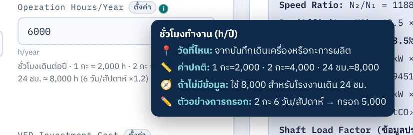
1
2
1
ปุ่ม ⓘ ข้างชื่อช่อง
2
กล่องช่วยเหลือ: วัดที่ไหน · ค่าปกติ · ไม่มีข้อมูลใช้ค่าอะไร · ตัวอย่าง
ชั่วโมงทำงาน: นับจากบันทึกการเดินเครื่องหรือกะการผลิต · โรงงานเดิน 24 ชม. ≈ 8,000 ชม./ปี
ปุ่ม ⓘ มีในช่องที่ต้องตัดสินใจเลือกค่า เช่น ชั่วโมงทำงาน ค่าการปล่อย CO₂ กำลังที่วัด
ข้อผิดพลาดที่พบบ่อย
คู่มือใช้งาน · ตรวจประเมินมอเตอร์และ VFD (Motor & VFD Energy Audit) · ระดับ Free
30 / 33
✗ กรอก P_in เป็น W
✓ ช่องกำลังไฟฟ้าเข้าหน่วย kW — 68,500 W ต้องกรอก 68.5
✗ ใช้รอบจากป้ายแทนรอบจริง
✓ Field 2 ต้องวัดรอบจริง — ต่าง 1 rpm โหลดเปลี่ยน ~7 %
✗ วัดกระแสเฟสเดียว
✓ วัดครบ 3 เฟส แล้วกรอกแยกช่อง เครื่องมือหาค่าเฉลี่ยและความไม่สมดุลให้
✗ วัดคนละช่วงโหลด
✓ กระแส kW และรอบต้องวัดพร้อมกัน ตอนโหลดคงที่
✗ ข้ามแท็บแรกไปทำ VFD
✓ ช่อง ⚡ ในแท็บ VFD ดึงจากแท็บแรก — ไม่คำนวณก่อน = ใช้ค่าตัวอย่าง
✗ เลือกชนิดโหลดผิด
✓ ปั๊มลูกสูบ/สายพานไม่ใช่กำลังสาม — ผลประหยัดจะเกินจริงมาก
✗ ลืมค่า static head
✓ ระบบส่งขึ้นที่สูงลดรอบได้จำกัด — ผลจริงต่ำกว่าที่เครื่องมือคำนวณ
✗ แก้ค่าแล้วไม่กดคำนวณ
✓ กดปุ่ม Calculate ของส่วนนั้นทุกครั้งก่อนจดผล
แบบฝึกหัด: โรงงาน B มอเตอร์ปั๊ม 30 kW (Field Mode 1)
คู่มือใช้งาน · ตรวจประเมินมอเตอร์และ VFD (Motor & VFD Energy Audit) · ระดับ Free
31 / 33
| ข้อมูล | ค่า |
|---|---|
| ป้าย: กำลัง · แรงดัน · FLA | 30 kW · 400 V · 55 A |
| ป้าย: รอบ · ความถี่ · η | 1,470 rpm · 50 Hz · 92 % |
| กระแส L1 / L2 / L3 | 41 / 42 / 40 A |
| กำลังไฟฟ้าเข้า (power meter) | 21.2 kW |
| Power factor | 0.80 |
| แรงดันที่วัดได้ | 398 V |
คำถาม — กรอกแล้วตอบ
1
โหลด (Load Factor) = ______ %
2
ประสิทธิภาพขณะทำงาน = ______ %
3
กระแสไม่สมดุลกี่ % อยู่ระดับไหน (ปกติ/เฝ้าระวัง/แก้ด่วน)?
4
ประสิทธิภาพถึงเกณฑ์ IE1 หรือไม่?
💡 เคล็ดลับ
แท็บ Motor Efficiency → AC → Field Mode 1 → กรอกทุกช่อง → Calculate (Current Method)
เฉลยแบบฝึกหัด โรงงาน B
คู่มือใช้งาน · ตรวจประเมินมอเตอร์และ VFD (Motor & VFD Energy Audit) · ระดับ Free
32 / 33
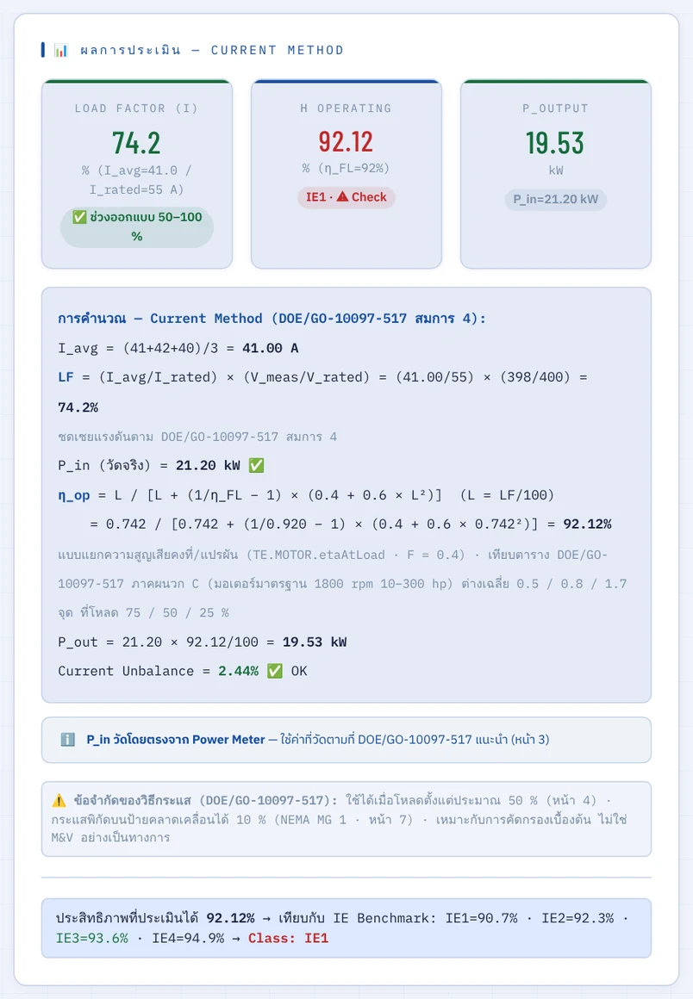
1) โหลด = 74.2 % (กระแสเฉลี่ย 41.00 ÷ 55 A × 398 ÷ 400 V)
2) ประสิทธิภาพ = 92.12 % · กำลังที่เพลา 19.53 kW
3) กระแสไม่สมดุล 2.44 % — ไม่เกิน 5 % = ปกติ
4) เทียบเกณฑ์ 30 kW: IE1 90.7 % · IE2 92.3 % → Class IE1 — ตัวเลือกเปลี่ยนมอเตอร์ IE3
✓ ผ่าน
ได้ตัวเลขตรงกัน = ใช้เครื่องมือเป็นแล้ว · ลองต่อในแท็บ VFD ถ้าปั๊มนี้หรี่วาล์วอยู่
สรุป 1 หน้า (พิมพ์ติดไว้ข้างคอมพิวเตอร์)
คู่มือใช้งาน · ตรวจประเมินมอเตอร์และ VFD (Motor & VFD Energy Audit) · ระดับ Free
33 / 33
1
AC/DC + เลือกวิธี
สำรวจ = Field Mode 1
2
ป้ายมอเตอร์
kW · V · FLA · rpm · Hz · η
3
ค่าที่วัด
กระแส 3 เฟส · kW · PF · V (· rpm)
4
กด Calculate
อ่าน η · โหลด · IE Class
5
แท็บ VFD
รอบเป้าหมาย · ชั่วโมง · ชนิดโหลด
6
Rewind / Sizing
เมื่อมอเตอร์ไหม้ หรือโหลด < 50 %
7
Diagnosis + Checklist
แรงดันไม่สมดุล · อุณหภูมิ · ความสั่น
8
บันทึก JSON / ส่งออก TE_ECM
ระบุวิธีทดสอบในรายงาน
อ่านผลแล้วตรวจ
☐
โหลด < 50 % → ทบทวนขนาดมอเตอร์
☐
ต่ำกว่า IE2 → พิจารณามอเตอร์ IE3
☐
กระแสไม่สมดุล > 10 % → แก้ระบบไฟ
☐
ปั๊ม/พัดลมหรี่วาล์ว → ประเมิน VFD
อ.หนึ่ง กลับทวี / Aj. Nueng Klubtavee
tripleeenergytools.com
tripleeenergytools.com